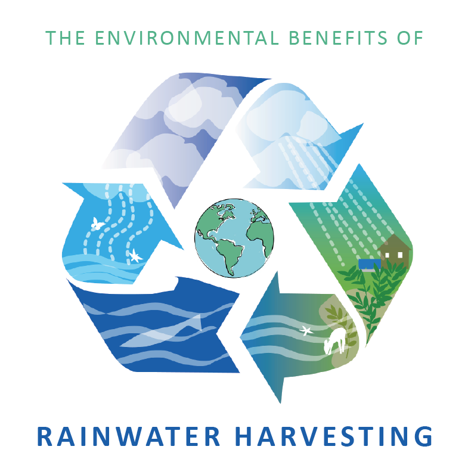
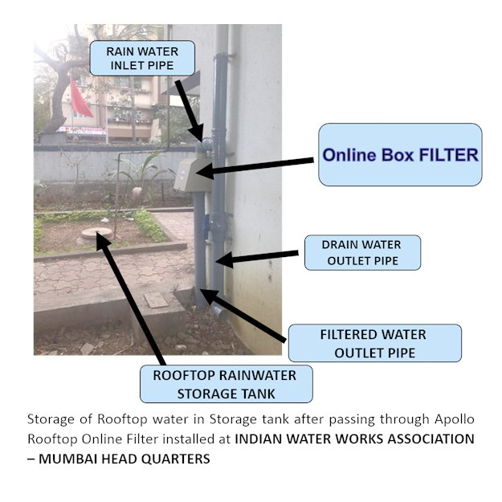
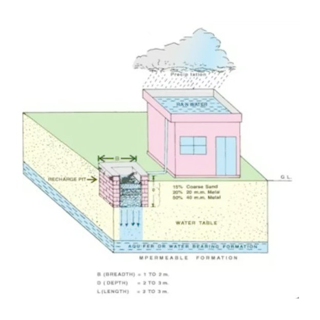
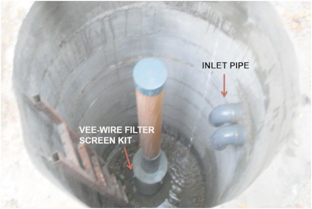

<!DOCTYPE html>
<html class="no-js" lang="en"></html>
<head>
	<title>Rain water Harvesting Methods in India</title>
	<meta charset="utf-8">
	<meta name="keywords" content="">
	<meta name="description" content="">
	<meta name="viewport" content="width=device-width, initial-scale=1.0">
	<link rel="canonical" href="">
	<link href="css/bootstrap-icons.min.css" rel="stylesheet">
	<link href="css/bootstrap.css" rel="stylesheet" media="screen">
	<link href="css/font-awesome.min.css" rel="stylesheet">
	<link href="css/mystyle.css" rel="stylesheet" media="screen">
	<link href="http://fonts.googleapis.com/css?family=Source+Sans+Pro" rel="stylesheet" type="text/css">
	<link rel="shortcut icon" type="image/x-icon" href="favicon.ico">
	<script async="" src="js/analytics.js"></script>
	<script>document.cookie = 'resolution=' + Math.max(screen.width, screen.height) + '; path=/';</script>
	<script async="" src="https://www.googletagmanager.com/gtag/js?id=G-0QPENW5B33"></script>
	<script>
		window.dataLayer = window.dataLayer || [];
		function gtag() { dataLayer.push(arguments); }
		gtag('js', new Date());
		gtag('config', 'G-0QPENW5B33');
	</script>
</head>
<body>
	<header>
		<div id="mhead" class="navbar navbar-inverse navbar-fixed-top bs-docs-nav" role="banner">
			<div class="container">
				<div class="navbar-header">
					<a href="index.html" class="navbar-brand"></a>
					<button class="navbar-toggle collapsed" type="button" data-toggle="collapse"
						data-target=".bs-navbar-collapse">
						<span class="pull-left navmenumar">Menu</span>
						<div class="pull-right">
							<span class="icon-bar"></span>
							<span class="icon-bar"></span>
							<span class="icon-bar"></span>
						</div>
					</button>
				</div>
				<nav class="collapse navbar-collapse bs-navbar-collapse" role="navigation">
					<ul class="nav navbar-nav">
						<li>
							<a href="index.html"><i class="fa fa-home fa-lg"></i></a>
						</li>
						<li class="dropdown">
							<a href="#" class="dropdown-toggle" data-toggle="dropdown">About Us <b
									class="caret"></b></a>
							<ul class="dropdown-menu">
								<li><a href="about-chaitanya.html">About Chaitanya</a></li>
								<li><a href="Gallery.html">Site Photographs</a></li>
							</ul>
						</li>
						<li class="dropdown">
							<a href="#" class="dropdown-toggle" data-toggle="dropdown">Services <b
									class="caret"></b></a>
							<ul class="dropdown-menu">
								<li><a href="rain-water-harvesting-services.html">RWH Services</a></li>
								<li class="active"><a href="rain-water-harvesting-methods.html">RWH Methods</a></li>
							</ul>
						</li>
						<li>
							<a href="vee-wire-filter-screens.html">Vee Wire Filter Screens</a>
						</li>
						<li class="dropdown">
							<a href="#" class="dropdown-toggle" data-toggle="dropdown">Products<b class="caret"></b></a>
							<ul class="dropdown-menu">
								<li><a href="rooftop-rain-water-filters.html">Apollo Rooftop Rainwater harvesting
										Filters</a></li>
								<li><a href="rcc-hume-pipes-collar-rings.html">Precast RCC Hume Pipes Collar Rings</a>
								</li>
								<li><a href="water_storage_modular_tanks.html">Modular Tanks</a></li>
								<li><a href="Piezometer.html">Piezometer</a></li>
								<li><a href="statometer-acoustic-dwlr.html">Statometer Acoustic DWLR</a></li>
								<li><a href="digital-flow-meter.html">Digital Flow Meter</a></li>
							</ul>
						</li>
						<li class="dropdown">
							<a href="#" class="dropdown-toggle" data-toggle="dropdown">Contact Us<b
									class="caret"></b></a>
							<ul class="dropdown-menu">
								<li><a href="contact-us.html">For Products &amp; Services</a></li>
								<li><a href="dealership-inquiry.html">For Dealership</a></li>
								<li><a href="dealer-location.html">Dealer Location</a></li>
							</ul>
						</li>
						<li>
							<a href="http://www.chaitanyaproducts.com/blog">Blog</a>
						</li>
					</ul>
				</nav>
			</div>
		</div>
	</header>
	<section class="bg4">
		<div id="myCarousel" class="carousel slide fade" data-ride="carousel" data-interval="3000">
			<div class="carousel-inner">
				<div class="item active"> 
				</div>
			</div>
		</div>
	</section>
	<div class="container heading6">
		<div class="row">
			<br>
			<div class="col-md-12 align tsfrp">
				<h2>METHODS OF HARVESTING RAIN WATER</h2>
				<p>There are three methods of harvesting rain water as given below:</p>
				<ol>
					<li>Storing rain water in collection tanks </li>
					<li>Recharging ground water aquifers, from roof top run off (Fig. 2.2)</li>
					<li>Recharging ground water aquifers with runoff from ground area</li>
				</ol>
			</div>
			<br>
		</div>
		<hr class="faded">
		<div class="row">
			<br>
			<div class="col-md-5 align tsfrp">
				<h2>1. Storage of Rain water in collection tanks </h2>
				<p>In place where the rains occur throughout the year, rain water can be stored in tanks. However, at
					places where rains are for 2 to 3 months, huge volume of storage tanks would have to be provided. In such places, it will be more appropriate to use rain water to recharge ground water aquifers rather than to go for storage. If the strata is impermeable, then storing rain water in storage tanks for direct use is a better method. Before storing rainwater in storage tanks rainwater should pass through Apollo Rooftop Online Filter installed at Rooftop Downtake pipe.</p>
			</div>
			<div class="col-md-7 align tsfrp">
				
			</div>
		</div>
		<hr class="faded">
		<div class="row">
			<br>
			<div class="col-md-7 align tsfrp">
				
			</div>
			<div class="col-md-5 align tsfrp">
				<h2>2. Recharging ground water aquifers from roof top run off</h2>
				<p>Rain water that is collected on the roof top of the building may be diverted by drain pipes to a
					filtration tank (for bore well, through settlement tank) from which it flows into the recharge well.
					This method of rain water harvesting is preferable in the areas where the rainfall occurs only for a
					short period in a year and water table is at a shallow depth.</p>
			</div>
		</div>
		<br>
		<hr class="faded">
		<div class="row">
			<br>
			<div class="col-md-5 align tsfrp">
				<h2>3. Recharging ground water aquifers with runoff from ground areas </h2>
				<p>The rain water that is collected from the open areas may be diverted by drain pipes to a recharge dug
					well / bore well. Apollo Vee Wire Filter Kit/ Rainwater Filter Kit is installed at the mouth of
					Borewell so that filtered water is recharged into Ground without contaminating Ground Water Table.
					The abandoned bore well/dug well can be used cost effectively for this purpose.</p>
			</div>
			<div class="col-md-7 align tsfrp">
				
			</div>
		</div>
		<hr class="faded">
		<div class="col-md-6 col-xs-12 text-center">
			<div class="new-demo-btn-wrapper ">
				<a href="tel:09136111150" class="btn btn-lg btn-block butbg1" title="call us at 091361 11150"><span
						class="glyphicon glyphicon-hand-right btlgh">�&nbsp;</span>Talk to Our Expert</a>
			</div>
		</div>
		<div class="col-md-6 col-xs-12 text-center">
			<div class="new-demo-btn-wrapper ">
				<a href="mailto:chaitanyaproducts@gmail.com" class="btn btn-lg btn-block butbg1"
					title="mail us at chaitanyaproducts@gmail.com"><span
						class="glyphicon glyphicon-envelope">�&nbsp;</span>Mail Us</a>
			</div>
		</div>
	</div>
	<script src="js/bootstrap.js"></script>
	<script src="js/mystyle.js"></script>

	<script>
		(function (i, s, o, g, r, a, m) {
			i['GoogleAnalyticsObject'] = r; i[r] = i[r] || function () {
				(i[r].q = i[r].q || []).push(arguments)
			}, i[r].l = 1 * new Date(); a = s.createElement(o),
				m = s.getElementsByTagName(o)[0]; a.async = 1; a.src = g; m.parentNode.insertBefore(a, m)
		})(window, document, 'script', '//www.google-analytics.com/analytics.js', 'ga');

		ga('create', 'UA-59047761-2', 'auto');
		ga('send', 'pageview');

	</script>
 </body>

</html>